8주 AI 에이전트 PoC 세션: AWS에서 만들고 운영하는 법, 온톨로지의 원리, 그리고 6개 과제와 닮은 사례
오준석, Senior Solutions Architect, AWS Korea | October 2026
네 사례에서 반복해서 보인 패턴, 과제가 달라도 똑같이 적용
현업 PoC 3개와 IT 팀 과제 3개, 패턴이 같으면 참고할 사례도 같음
Strands Agents, Amazon Bedrock AgentCore, 관측과 평가
루프는 SDK에 맡기고, 팀은 도구와 지식에 집중
# strands_agent.py from strands import Agent, tool @tool def search_terms(query: str) -> str: """상품 약관에서 관련 조항을 찾는다""" return kb_search(query) # 예시 함수 agent = Agent( model="<Bedrock 모델 ID>", tools=[search_terms], system_prompt="근거 조항을 인용해 답한다", ) agent("ISA 중도 인출 조건 알려줘")
프레임워크와 모델 무관, Strands, LangGraph, OpenAI Agents SDK 등으로 만든 에이전트에 그대로
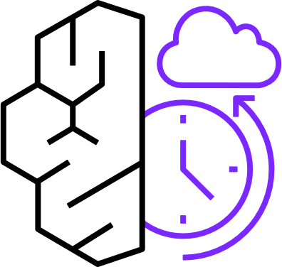
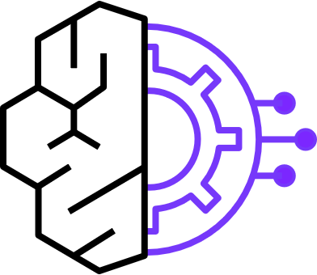
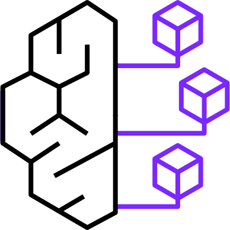
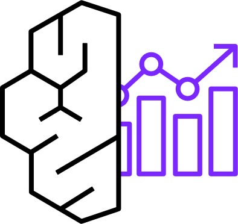
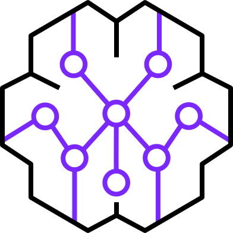
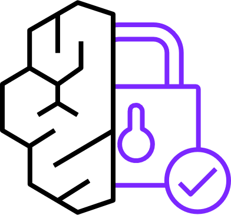
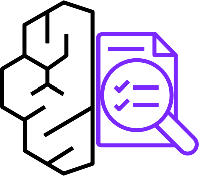
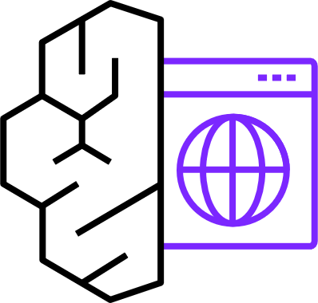
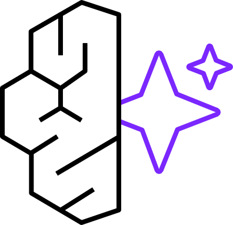
같은 trace 위에서 운영 지표와 품질 점수를 함께 확인
개념, 관계, 어휘, 규칙. 그리고 직접 돌려 본 데모
사람이 쓰는 말과 시스템에 저장된 값 사이의 세 가지 간극
BD_OVS_GOV 하나뿐입니다.fee_bp이고 단위는 bp(0.01%p). 담당자는 알지만 DB는 말해 주지 않습니다.탭을 눌러 은행 예시로 확인
주어, 관계, 목적어(트리플)를 하나씩 쌓으면 지식 그래프
개념을 누르면 하위 개념과 해당 상품까지 함께 포함
대표 이름(prefLabel), 별칭(altLabel), 실제 값을 한 개념에 묶는 어휘(SKOS)
# etf_ontology.ttl (데모에 실제로 쓴 파일 일부) ex:BdUSGov a skos:Concept ; skos:broader ex:BdOvsGov ; # 상위: 해외국채 skos:prefLabel "미국국채" ; skos:altLabel "미국채", "미 국채", "US Treasury" ; ex:sqlFilter "ast_cls = 'BD_OVS_GOV' AND rgn_cd = 'US'" . # 업무 상식 (Semantic Layer) ex:RuleFee ex:trigger "보수" ; rdfs:comment "fee_bp 단위는 bp(1bp = 0.01%p)다. 0.1% = 10bp." .
질문이 들어와서 답이 나가기까지, 모델이 추측하던 일을 하나씩 결정적으로
경쟁이 아니라 역할 분담, 미래에셋증권은 세 가지를 동시에 조회
작게는 파일과 코드, 커지면 그래프 DB와 관리형 GraphRAG
미래에셋증권 실험을 작게 재현: 가상 ETF 22개, 질문 12개, Claude Haiku 4.5
BD_OVS_GOV, T_BATT), 보수는 bp 단위. 모든 데이터는 가상, 1회 실행, 2026-10-21D1 결과(12문항, 1회)와 미래에셋증권 결과(72문항)의 같은 방향
thm_cd IN ('미국국채', 'US Treasury', ...)D2: 신한카드식 3속성 인텐트 분류를 소형 모델로 재현해 본 결과
| 회차 | A 목록에서 직접 선택 | B 3속성 + 그래프 매칭 |
|---|---|---|
| 1차: 속성 정의 초안 | 24/40 (60.0%) | 23/40 (57.5%) |
| 2차: 설명과 속성 정의 수정 | 40/40 (100%) | 24/40 (60.0%) |
미래에셋증권의 순서를 8주 PoC 크기로 줄이면
LG전자, 신한카드, 미래에셋증권, Canva. 원문 아키텍처로 보기
Data Rich, Insight Poor. 무엇을 물어야 할지부터 막히던 마케터의 데이터 분석
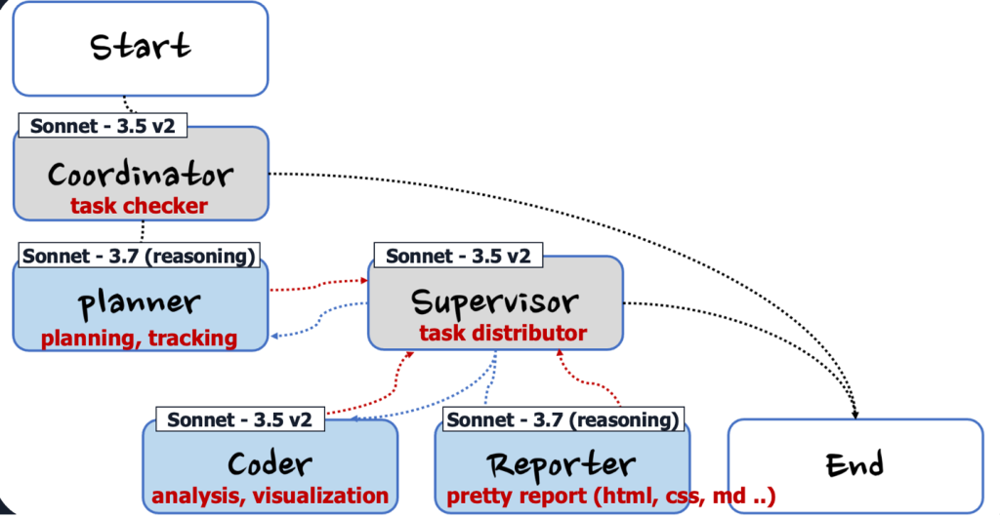
8개 에이전트, 3계층. AgentCore Runtime 위의 Strands 그래프와 격리된 Code Interpreter
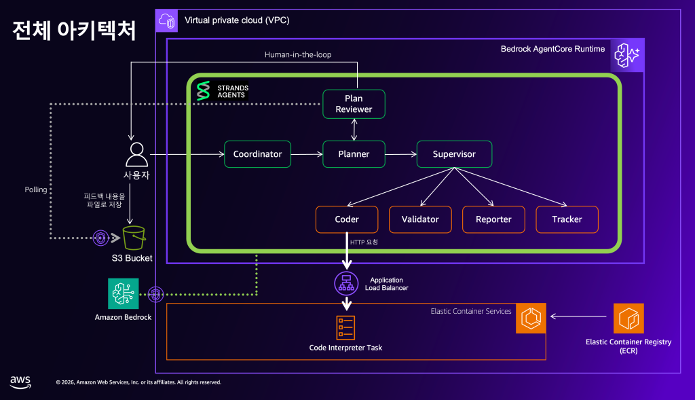
계획 계층이 계획하고 승인받은 뒤, 실행 에이전트는 도구처럼 호출
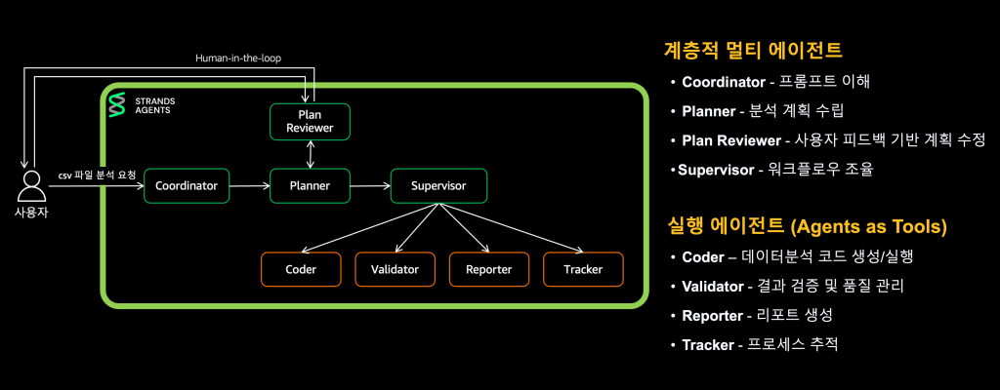
과제 3(보고서), 4(서류 점검), 6(관제)에 그대로 적용 가능
작업별 소요시간, 토큰, Cache Hit을 같은 화면에서
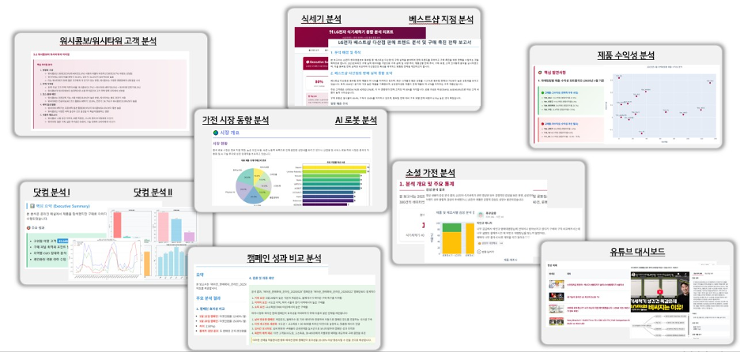
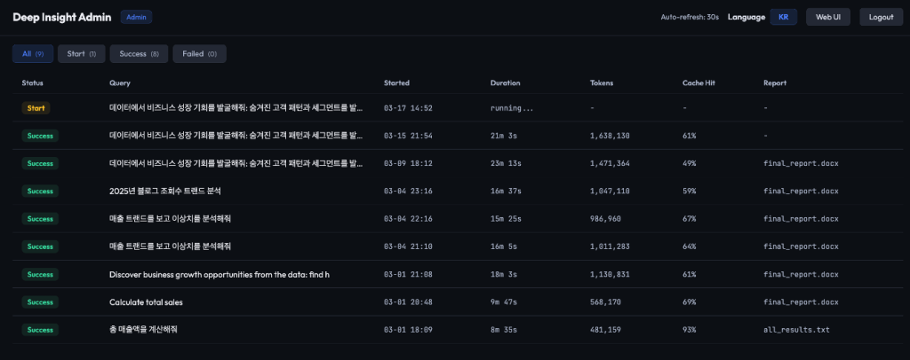
온톨로지 인텐트 분류, 분산형 에이전트 워크플로우, 에이전트 간 대화 기반 self-healing
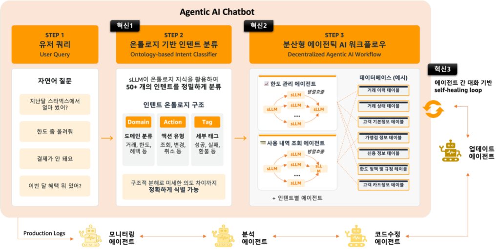
규제, 비용, 5초 응답 제약 속에서 소형 모델(sLLM)로 정확도를 올린 방법
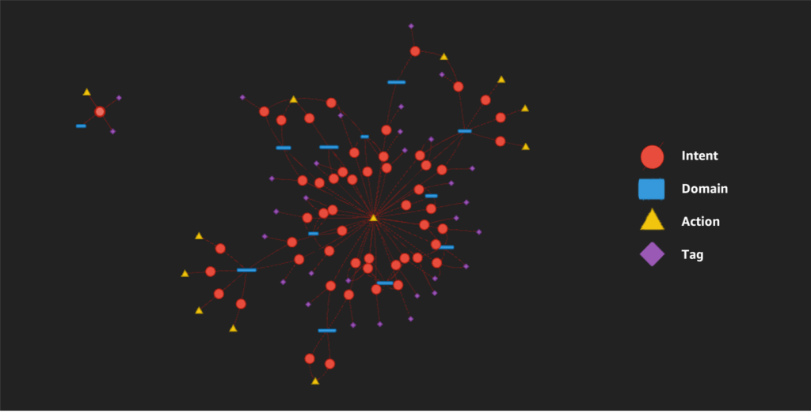
각 전문 에이전트가 "내 일인가"만 병렬 판단, 에이전트가 늘어도 응답 시간은 거의 그대로
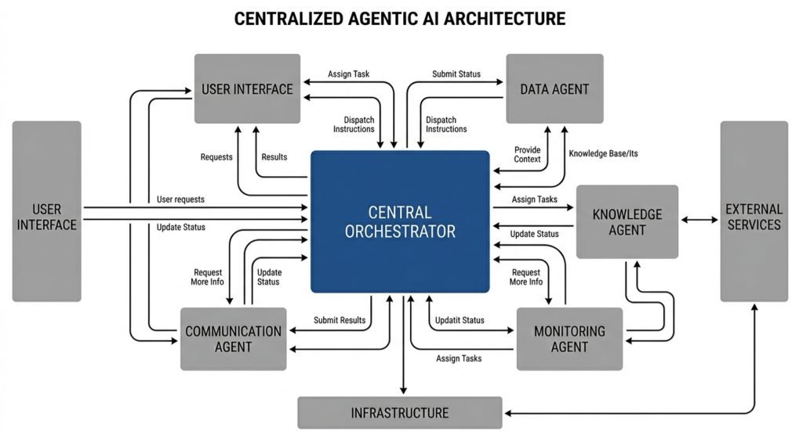
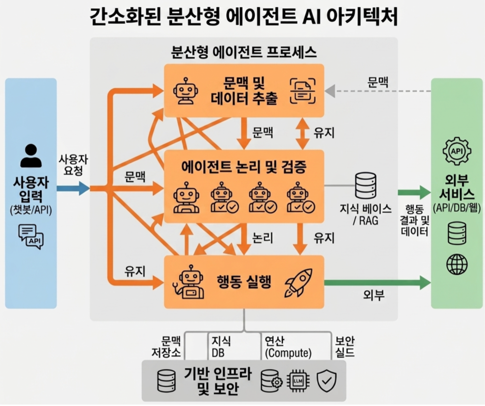
Router Agent, 전문 에이전트(AgentCore Runtime), AgentCore Gateway(MCP), Bedrock
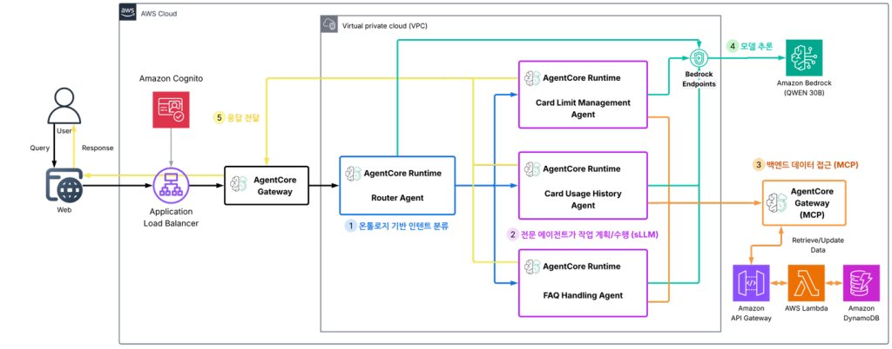
합성 고객이 테스트하고 에이전트가 고친다: 수일에서 수주 걸리던 멀티턴 테스트를 자동 루프로
5호망 AWS Private Cloud의 지식DB, 망분리 예외 구간에서만 LLM 호출
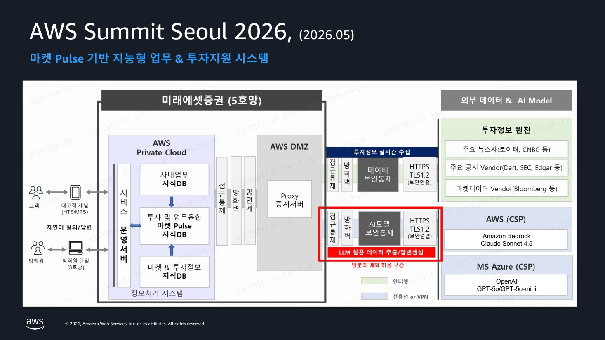
AI-Ready Data: 수집과 파싱, 온톨로지 설계, 지식 추출, 질의와 검색
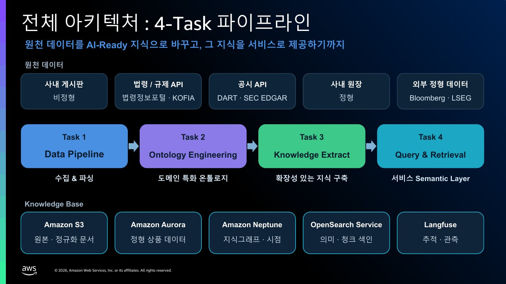
법령과 업무 상식을 결정적인 규칙으로 옮기기
| Challenge | 해법 |
|---|---|
| 1 Ontology Axioms | 자본시장법 §229 집합투자기구 유형을 폐쇄집합으로. 별칭은 출처별 구분, 단일값과 상호배타 제약 |
| 2 Ontology Sampler | 축 기반 표본: AUM 상위 50개는 23개 축값 중 11개, Sampler 50개는 22개 커버 |
| 3 Mapping Rules | YAML 규칙표로 코드 수정 없이 확장 (7 네임스페이스, 6 도메인, 이름 맞추기 12종) |
| 4 Thin, Temporal Graph | 항상 참인 구조와 유효기간 있는 사실을 분리. 새 사실이 옛 사실을 자동 만료 |
| 5 Ontology Grounding | vocabulary.ttl로 미국국채를 해외채권으로 확정한 뒤 LLM은 질의만 조립. 실패 시 되묻기 |
| 6 Semantic Layer | 배당은 분배율, 배당 질의에 투자지역 필터 금지, 브랜드에서 운용사 매핑 |
하나의 질문이 네 저장소를 동시에 조회하고, 근거로 합쳐짐
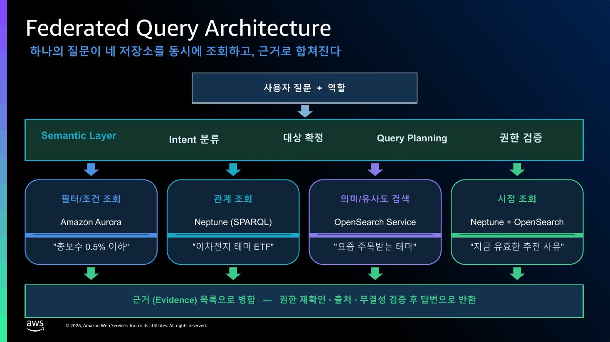
국내 ETF 도메인, 자체 벤치마크 72문항, 구성요소를 하나씩 더하며 측정
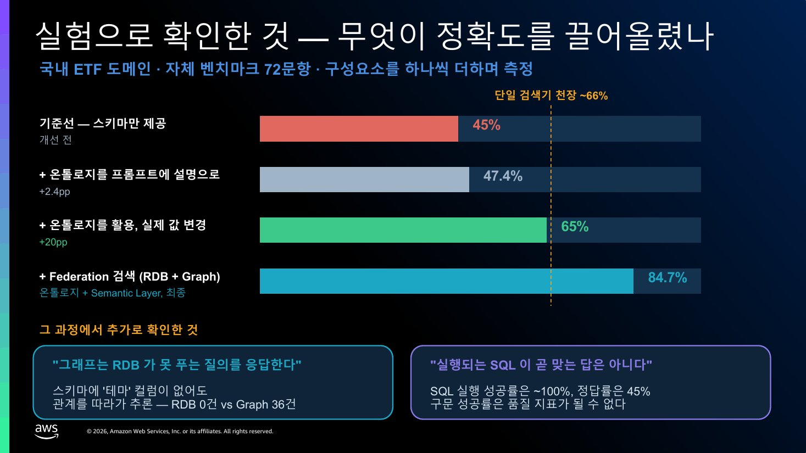
기술 트랙과 규제 트랙을 병렬로, 일정은 발표 시점 기준
| Phase | 기간 | 내용 |
|---|---|---|
| Phase 1 | 2026.02~03 | 상품지식 EBA: GraphRAG Toolkit으로 Ontology, ER, Search 방법론 검증 |
| Phase 2 | 2026.04~09 | 지식DB와 지식검색서비스 구축 (AWS Professional Services 협업) |
| Phase 3 | 2026.10~ | 전사 AI 표준 지식 기반, AI-Ready Data 거버넌스 |
Canva Code가 스케일 전에 먼저 만든 것, Amazon Bedrock 기반
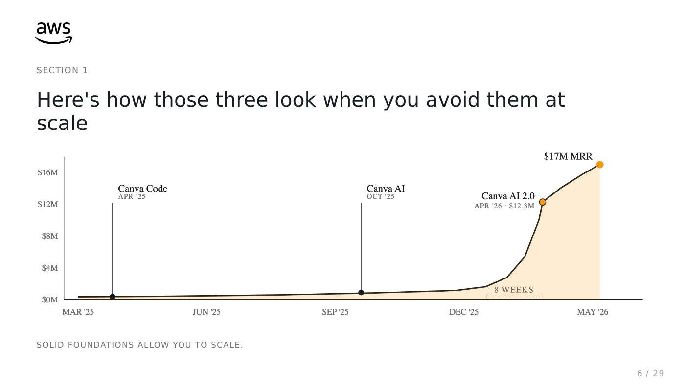
Architect(Opus)가 계획, Builder와 Editor(Haiku)가 실행
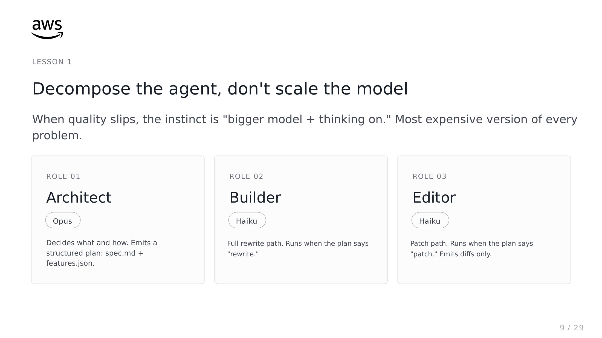
Sonnet 주 스레드, 평균 총비용 −46%, 사용자 성공 지표 +9%
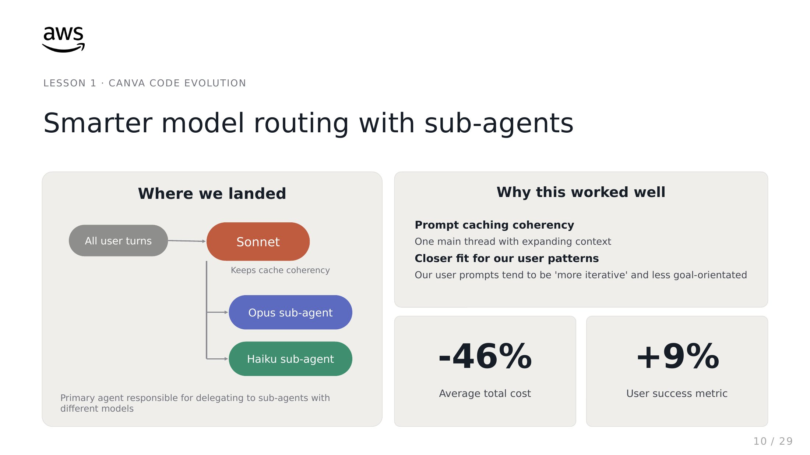
모델은 확률적 권한, 주변 코드는 결정론적 권한
| Opus 4.6 High | 출력 토큰 | 지연 | WCAG AA |
|---|---|---|---|
| thinking 끔 | 11k | 138s | 1 / 10 |
| thinking 켬 | 37k (3.4×) | 530s (3.8×) | 2 / 10 |
AWS Prescriptive Guidance, 과제의 어느 지점에 어떤 패턴을 쓸지
| 패턴 | 해법 | PoC 과제 연결 |
|---|---|---|
| Agentic Loop | 도구 결과를 한 메시지로 묶어 재호출, 반복 상한 | 모든 과제의 뿌리 |
| Deterministic Override | pre-tool hook으로 반드시 지킬 규칙 강제 | TASK 01 상담 금지 표현, 고액 처리 |
| Tool Gate | 선행 도구가 성공하기 전 호출 차단 | TASK 04 분류, 추출, 대조 순서 |
| Validation-Retry | 앱 코드로 검증 후 원문 에러로 재시도, 2회 상한 | TASK 03 수치 검증, TASK 04 필드 검증 |
| Structured Error | transient, validation, permission, prerequisite 4분류 | TASK 06 조치 권한 오류 재시도 금지 |
| Confidence Routing | 0~1 점수 대신 4개 이름 라벨로 사람 검토 선별 | TASK 04 불확실 서류만 사람 검토 |
| Review Pass | 이진 루브릭 5개 이내로 2차 검토 | TASK 02 디자인 규칙, TASK 03 인용 점검 |
| Coordinator-Subagent | 병렬 디스패치, 겹치지 않는 영역 | TASK 05, 06 지식, 코드, DB 에이전트 분리 |
Agentic Loop를 먼저 제대로 만들고, 필요한 지점에만 패턴을 추가
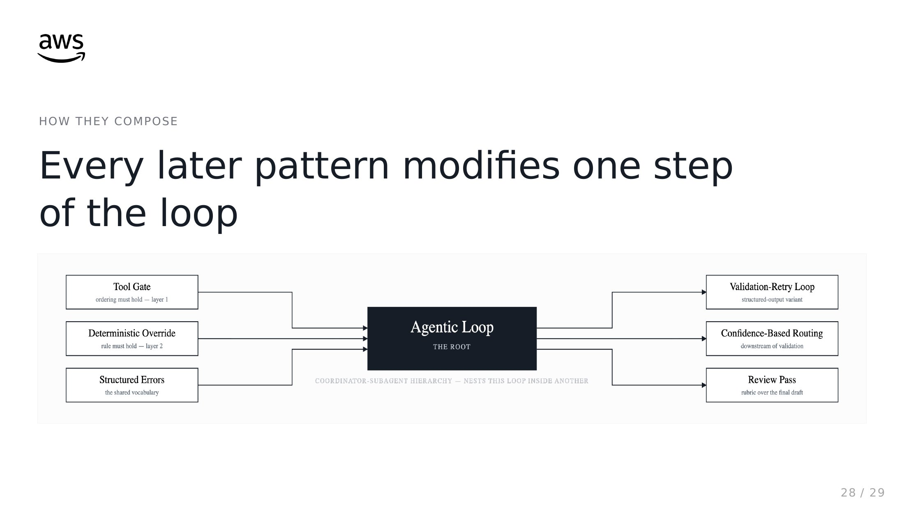
모델을 바꾸기 전에 세 가지를 먼저 설계
| 패턴 | LG전자 | 신한카드 | 미래에셋증권 | Canva |
|---|---|---|---|---|
| 지식 구조화 | 에이전트 간 원본 누적 기록 | Domain, Action, Tag 인텐트 온톨로지 | FIBO 기반 온톨로지 + Semantic Layer | features.json 스펙, 프로젝트 파일 3종 |
| 역할 분리와 검증 | Planner, Supervisor, Validator | 내 일인가 판단하는 분산형 에이전트 | 근거, 권한, 출처 검증 후 반환 | Architect, Builder, Editor + exact-match 도구 |
| 평가 루프 | 계획 대비 Task Tracking | 페르소나 시뮬레이션 후 재테스트 | 72문항 벤치마크로 단계별 측정 | 품질, 비용, 지연 3축 eval |
| 대표 수치 | 3일 → 30분 | 84.2% → 91.0% | 45% → 84.7% | 비용 −46%, 성공 +9% |
6개 과제와 국내외 사례, 각 과제에 가져올 포인트
패턴이 같은 과제(1과 5, 2와 3, 4와 6)는 서로의 사례도 함께 보기
| 과제 | 닮은 사례 | 가져올 포인트 |
|---|---|---|
| TASK 01마이데이터 자산관리 상담 | PropHero, NewDay, 신한카드 | 근거 기반 답변 + 대화마다 자동 채점 |
| TASK 02UX 디자인 기획 | 미리디(미리캔버스), 위메이드플레이, 카카오스타일, Canva | 화면 자산을 구조화 스펙으로, 그 위에서 생성과 점검 |
| TASK 03보고서 작성(리서치) | LG전자, 링크알파, 서울경제신문 | 작성자와 검증자 분리, 인용 자동 점검 |
| TASK 04고객 제출서류 누락 점검 | Rocket Close, Sun Finance, 카카오페이손해보험 | 문서 분류, 항목 정의서 기반 추출과 대조 |
| TASK 05IT 운영지식 위키 | 카카오페이증권 춘시리, A1Mobilsoft | 위키 주기 동기화 + 좋은 답만 지식으로 승격 |
| TASK 06AI 기반 통합관제 | GS리테일, 삼성계정, 토스뱅크 ZeroOps | 로그, 지표, 변경 이력 교차 분석. 조치는 사람 승인 |
과제 목표: 합성 고객 페르소나로 자산 현황 진단, 근거와 함께 답하는 상담 봇, 품질 평가와 코칭
과제 목표: 모바일 뱅킹 앱 화면 자산 정리, 기획 초안, 와이어프레임, 대안 시안 생성 + 디자인 규칙 점검
멀티모달 캡셔닝으로 화면 자산을 검색 가능한 메타데이터로
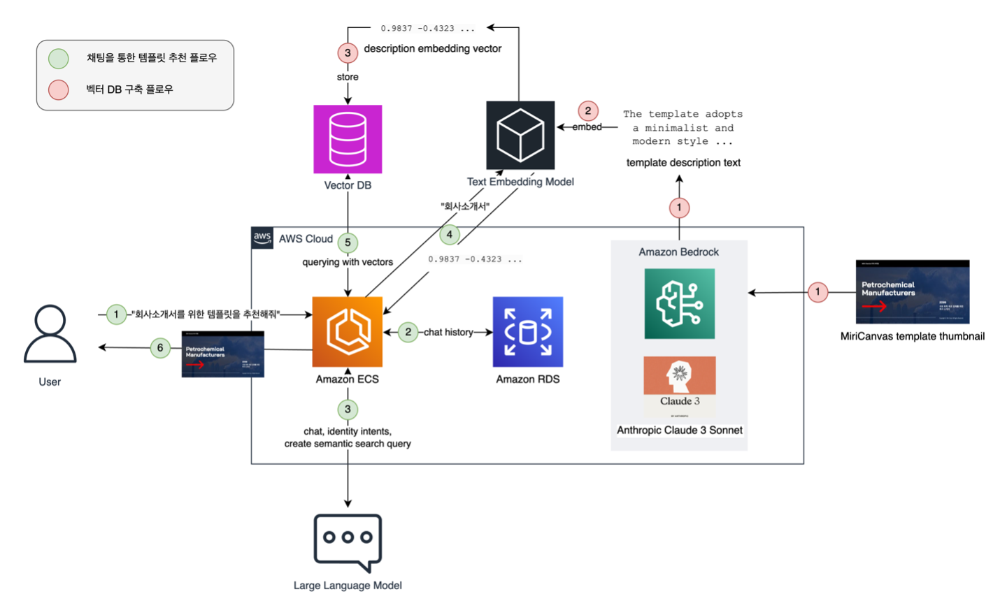
과제 목표: 공개 자료 조사와 구조화, 출처와 함께 보고서 초안, 품질 자동 점검
과제 목표: 제출 문서 판독과 분류, 필수 항목과 서명 누락을 항목 정의서와 대조해 검증
과제 목표: 운영 절차와 장애 대응 지식을 출처와 함께 답하고, 질의 이력으로 지식을 보강
과제 목표: 사내 컨테이너 플랫폼의 로그와 지표를 AI로 진단해 이상 징후와 대응을 돕는 관제 도구
화면 데모 한 편, 체크리스트, 바로 쓸 자료
ontology-assembly (assembly.whchoi.net): 22대 국회 의원, 의안, 표결, 주제, 기사를 하나의 온톨로지로
오늘 사례에서 뽑은 다섯 가지, 과제가 달라도 순서는 같음
링크는 공유 자료에서 클릭 가능
8주 PoC를 마무리하며